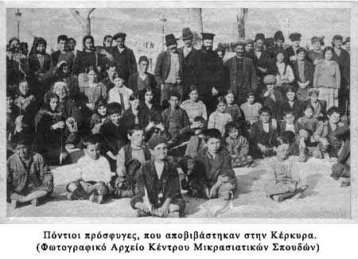

Ιδιαίτερα δοκιμάστηκε ο ποντιακός ελληνισμός από τις διώξεις και τις εθνικές εκκαθαρίσεις κατά τη διάρκεια του Α΄ Παγκόσμιου Πολέμου (1914-1918). Οι εκτοπίσεις και οι διώξεις συνεχίστηκαν και στα επόμενα χρόνια λόγω του Μικρασιατικού Πολέμου (1919-1922), παρά το ότι μέρος του τουρκικού πληθυσμού, όπως προκύπτει από μαρτυρίες, δε συμφωνούσε με τις ακρότητες της πολιτικής ηγεσίας.
Μαρτυρία του Αυστριακού προξένου στην Τραπεζούντα το 1919:
«Η πολιτική των Τούρκων είναι, μέσω μιας γενικευμένης καταδίωξης του ελληνικού στοιχείου, να εξοντώσει τους Έλληνες ως εχθρούς του Κράτους, όπως πριν τους Αρμενίους. Οι Τούρκοι εφαρμόζουν τακτική εκτόπισης των πληθυσμών, δίχως διάκριση και δυνατότητα επιβίωσης, απ' τις ακτές στο εσωτερικό της χώρας, ώστε οι εκτοπιζόμενοι να είναι εκτεθειμένοι στην αθλιότητα και τον θάνατο από την πείνα.»
Υπολογίζεται ότι 500.000 Έλληνες Πόντιοι εξοντώθηκαν αυτήν περίοδο κυρίως στις ατέλειωτες «πορείες θανάτου».
Μαρτυρία Σάββα Φυτόπουλου: «Μας πήγαιναν για θάνατο.»
«Ο Πρώτος Παγκόσμιος Πόλεμος, στα 1914, άρχισε να μας αναστατώνει τη ζωή μας. Από τότε άρχισαν τα βάσανά μας. Στα 1915 έγινε ο διωγμός και η σφαγή των Αρμένηδων. [...] μάζεψαν όλους τους Αρμένηδες από την Κερασούντα και τα γύρω χωριά. Ένας Αρμένης δεν έμεινε. 'Aντρες, γυναίκες, γέροι, γριές και παιδιά, όλοι πήρανε τον δρόμο. [...] Οκτώ ώρες έξω από την Κερασούντα [...] τους περάσανε όλους απ' το μαχαίρι.
Στα 1916, παραμονές Χριστουγέννων, μπήκε στο χωριό μας τούρκικος στρατός. Το είπαν καθαρά ότι θα φύγουμε εξορία όλοι και θα αδειάσει το χωριό. [...] Μαζί μας μάς άφησαν να έχουμε ό,τι μπορείς να σηκώσεις στην πλάτη σου - το πάπλωμά σου και το καζάνι σου. [...] Μας συνόδευαν χωροφύλακες Τούρκοι [...],μην τυχόν και κατορθώσει κανείς και ξεφύγει. Στο δρόμο που προχωρούσαμε, απαντούσαμε και τους Χριστιανούς από τ' άλλα χωριά της Κερασούντας. Κι όλο μεγάλωνε το μπουλούκι των ανθρώπων που πήγαιναν για θάνατο. [...] Πόσοι πέθαναν στο δρόμο, δε μετριούνται. Ενάμισο μήνα περπατούσαμε μέσα στα χιόνια. Τα πόδια μας ήταν όλο φούσκες και πληγές. Φαΐ δεν υπήρχε τίποτα. Ό,τι μαζεύαμε απ' τη διακονιά, όπως περνούσαμε από τα χωριά. Συσσίτιο πού να μας δώσουνε; Αυτοί μας πήγαιναν για θάνατο. Τα ρούχα είχανε γίνει κουρέλια επάνω μας. ’ρχισε ο τύφος και οι άνθρωποι πεθαίνανε στο δρόμο. Έτσι μένανε, μέσα στα χιόνια ξεροί. Ποιος να τους θάψει; Τα μικρά παιδιά κλαίγανε και φωνάζανε. [...] Τα σηκώνανε οι μανάδες τους στην πλάτη και ύστερα έβλεπες μάνα και παιδί να ξαπλώνουνε στο χιόνι και να μη σηκώνονται.»
Πηγή: Η Έξοδος,τόμ. Γ΄ και Δ΄:
Μαρτυρίες από τις επαρχίες
του Παράλιου και Μεσογειακού Πόντου ,
Αθήνα, Κέντρο Μικρασιατικών Σπουδών
Μαρτυρία Αναστασίου Καραγκιαούρογλου: «Τούρκος μας βοήθησε να σωθούμε»
«Οι Τούρκοι ήτανε φίλοι μας και μέχρι το τέλος μείνανε φίλοι μας. Το κάψιμο και οι δολοφονίες [
] και όλη τη συφορά δεν την κάνανε οι Τούρκοι οι δικοί μας, οι γειτόνοι κι οι φίλοι μας. Αυτά όλα τα έκανε ο Κεμάλ και οι άνθρωποι οι δικοί του. [
] ’μα λέω φίλος ήτανε ο Τούρκος, έχω απόδειξη. Εμάς, όταν ήρθε το χαμπέρι πως θα μας σφάξουνε στο χωριό μας και να φύγουμε άρον άρον, Τούρκος μας βοήθησε να σωθούμε. Τούρκος έφερε την ειδοποίηση και ο ίδιος Τούρκος ήρθε μαζί μας μέχρι το δάσος, που πήγαμε, για να μας φυλάξει, να σιγουρευτεί πως είμαστε κρυμμένοι και ύστερα να φύγει.
Και στο βουνό που ήμαστε, έρχονταν νύχτες, κρυφά, με το φόβο να τους καταλάβουνε οι δικοί τους και να κινδυνέψει η ζωή τους, και μας φέρνανε μες στα τσουβάλια ψωμιά και αλεύρια και ό,τι βρίσκανε για να φάμε.
Χριστιανοί δε μας κοιτάξανε έτσι. Στην Ελλάδα, όταν ήρθαμε, μας βλέπανε χωρίς σπίτι, χωρίς ρούχο, και κλείνανε τις πόρτες των σπιτιών τους κι ούτε ένα ποτήρι νερό δε δίνανε»
Πηγή: Η Έξοδος, τόμ. Γ΄ και Δ΄:
Μαρτυρίες από τις επαρχίες
του Παράλιου και Μεσογειακού Πόντου,
Αθήνα, Κέντρο Μικρασιατικών Σπουδών